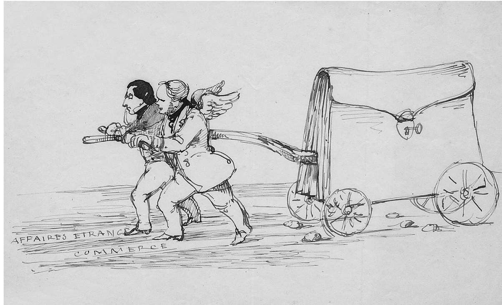
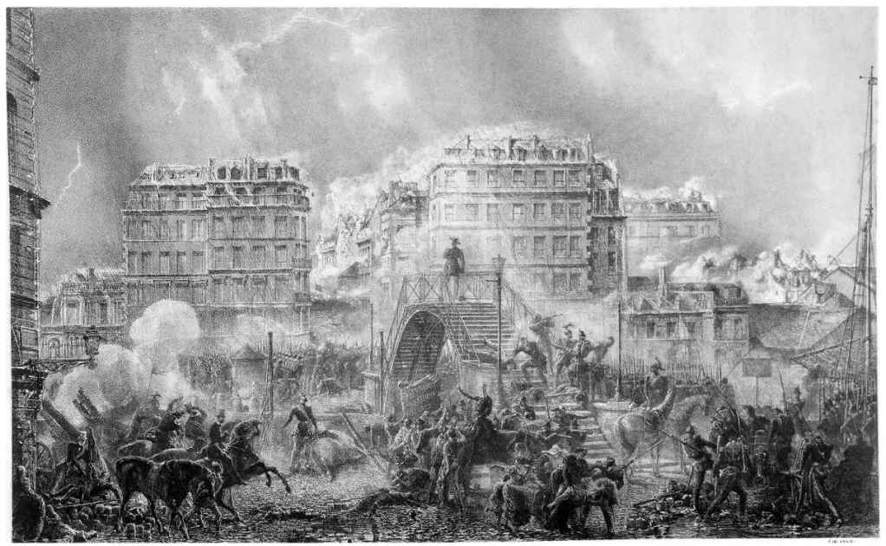

由托克维尔对于哲学的批评看来，称其为哲学家或许会自相矛盾，过于冒失。但他自称“新式自由主义者”，并提出了自己重新思考过的新的自由主义。在《论美国的民主》中，他曾批评唯物主义哲学助长了民主制度只寻求物质享乐的性情，致使人们丧失了宗教所激发的自豪感。在《旧制度与大革命》中，他又批评理性主义哲学只寻求改革体系而不介意有无自由。我们不难把这两种哲学看成是作为自由主义之源的现代政治哲学的不同方面：唯物主义追求实施改革而不再逆来顺受，理性主义追求改善物质生活而非画饼充饥 [1] 。在《回忆录》中，托克维尔记述了自己亲眼见到并参与其中的1848年法国革命，借以展示他希望自由主义能够有一些骄傲，那是他本人的多少有些悲壮的骄傲。那是有关失败的记述，几乎不能算是骄傲的胜利。但同时它又不无启迪，不管是把自己想象成政治家的哲学家，还是听任自己被哲学家鼓动的平民，都会从中受到教益。
托克维尔的《回忆录》明显不同于他的另外两部主要著作，这本书撰写于那两部巨著之间的1850—1851年。他在本书开头说自己“暂时离开公务的舞台”，且由于健康原因而无法持续进行任何研究工作。1849年10月，他被迫辞去外交部长的职务，这是他政治生涯中最高也是最后一个职位，他在任的时间也不过区区五个月；随后在1850年3月，他第一次吐血，这是九年后夺去他的生命的疾病的初发症状。他现在是单身，“处于孤寂之中” ——这句话带着点卢梭式的浪漫，因而决定探究1848年一连串事件的根源，“描绘”他所看到的事件参与者。这本书完全不像他的其他著作那样，是写给读者的“文学作品”；它是“为我一个人写的”。《回忆录》一书的确只给几个朋友看过，在他有生之年也没有出版，直到1893年，因为他的遗嘱许可才得以面世。
托克维尔说，这部作品将会是一面“镜子”，他在里面看见了同代人和他自己，而不是准备公之于众的“画像”。他唯一的目标是“自得其乐”，“独自思考”社会的真实写照，观察“拥有真正现实的善恶的人，去理解和评价他的本性”。因此他的言辞或许是真诚的，他必须对这些内容“完全保密”。这里他强调了审视镜中的自己（这是他会做的事）和为他人画像（这是他不会去做的事）之间的差别。但他又说自己会“描绘”那些他见过的人，而且在接下来那一段，他再次提到希望“描绘”的事件。此外，在本书后文中，他的确以最精彩的文笔“描绘”了那些人物和事件，完全不是只为自己的消遣而写。虽然他曾在一封信中说自己正在进行的这个工作是“白日做梦”，实际上，他却咨询过其他参与者，还核查了文献来验证自己的记忆。那么，为什么他要对这部作品的目标受众如此含糊其辞呢？
《回忆录》的确是一幅生动的画像，但却是给后代人看的。这部作品的鲜明特征就是它内含许多生动的个人肖像，全然不同于他的另外两部主要研究原因、对人物只作泛泛而谈的著作。在该书中，从他对国王路易—菲利普的辛辣分析开始，读者会接二连三地看到令人难忘的讽刺画式人物素描，这些个人不是事件的主导者，而是因为自己的错误、有时还是因为美德而成了那些事件的牺牲品。他自己的亲人（他的弟媳）和朋友（让—雅克·安培）都未能幸免，在该书接近结尾处，我们又看到了总统（很快又成了皇帝）路易·拿破仑的滑稽肖像：半是老式的阴谋家，半是彻头彻尾的享乐主义者。在生前公布这些乐事可能会显得过于轻率，很有可能还会引来牢狱之灾，但为后代记述这段史实却让托克维尔有机会展示务实政治实际上是如何运作的。在《论美国的民主》和《旧制度与大革命》两部著作中，他颂扬了政治自由的实践；在这本书中，他剖析了政治自由的实际运用 ——或者倒不如说，论证了法国未能建立起政治自由。
但更重要的是，托克维尔剖析了自己的作用，或者毋宁说自己的失败。他本人是个陷身于政坛的文人，就像他在《旧制度与大革命》中谴责的那些人一样。在这里，他展示了在政坛上挥斥方遒的文人能走多远，要在多大程度上依赖机遇，又要多么仰仗其必须与之合作的庸众的协作。这是《回忆录》写实的一面，与描绘的一面既和谐共存，也形成了对照，因为当他反观自身时，他看到自己身为画师，既身处政坛，又作为导师身处其上。在《论美国的民主》一书的结尾他说，他努力进入上帝的视角，以便在民主制度和贵族制度之间做出评判。但他还说，和凡人不同，上帝既能看到孤立的事件，也能看到全貌。在本书中，他站在个体的立场上来审视人性，因为事件之所以是孤立的，是因为人类个体千差万别。像18世纪的法国文人一样，投身政治的哲学家倾向于认为可以系统地应用普遍真理来长久地改进人类的事业。因此，普遍真理可以要求个别境况服从于它，并强迫后者按照它的意志行事。
托克维尔在《回忆录》中表明，这种服从不会发生。他把自己置于1848年法国革命的情境中，彼时，他作为一个文人或哲学家，希望控制事件的发生却无能为力。他当然反对理论家，尤其是希望发生那场革命的社会主义者，他也从未声称代表“哲学”或任何学说，他只代表他自己。但在反对革命时，他承担起反哲学家的角色，揭露了自命为哲学家的那些人的荒谬行为。1848年革命推翻了路易—菲利普的君主政体 ——对此结果托克维尔反对却无奈，随后建立了受困于党派倾轧的共和国，他负责任地加入了这个共和国的政府，却并不热衷于此。共和国又在1851年被路易·拿破仑推翻，重新建立了拿破仑的帝国，如今变成了温和、民主的专制国家，集中央集权和平民的自满为一体。1848年的革命者们并未得偿所愿，托克维尔也一样壮志未酬。他看到了自己预测的噩梦成真，又距离关键事件那么近，这让他自己便足以成为思想家之无能的典型。记录这些事件的《回忆录》直到很久以后才出版，可以使我们清楚地洞察到他的内心，并和他一样做出判断 ——我们毕竟眼见着这些事件以让人宽心的陈词滥调一一披露出来，为的是取悦当代读者。

图9 托克维尔的一幅速描，画的是他本人和同事朗瑞奈拉着车去内阁
关于他自己的建议无效，托克维尔举了一个关键的例子。虽说他只能勉强算是热衷于君主制，但他认为法国维持一个有民选议会的君主立宪制要好于冒险成立共和国、选举总统，为拿破仑的继任者铺平道路 ——这正是后来真实发生的情况。1848年2月24日，一伙武装民众暴力闯入制宪议会（下议院），推翻了君主制度。这一事件使得以法国人民的名义在巴黎闹事并使用革命暴力反对宪法的暴徒取得了合法地位，作为连锁反应，这后来又推动中产阶级和农民支持路易·拿破仑，以保护他们的财产免受暴徒的威胁。

图10 1848年法国大革命期间，一伙暴徒袭击了一个街垒。托克维尔预言了革命的发生，也反对革命，但未能成功地阻止革命的到来
托克维尔作为下议院的成员，当天就在现场，并在《回忆录》中讲述了此事：当暴徒聚集时，他环顾四周，希望找到什么人来安抚他们，然后就看到了诗人和历史学家阿尔方斯·德·拉马丁，后者是当时议会中最受人欢迎的政治家。托克维尔走向他，在他耳边低语道，如果他现在不站出来讲话，“我们就毫无立足之地了”。拉马丁回绝了；他不愿做任何挽救君主制度或让他的声望涉险的事。他后来倒是讲话了，但为时已晚，众人平安的机会一去不返。托克维尔说，有一小队国民自卫军来到现场，但也晚了半个小时。托克维尔一直坚守阵地，但他的建议没有被采纳，结果“改变了法国的命运”。或许他的描述多少带点戏剧化的做作，但他这样做不无目的。它充分显示了关于可能的改革、关于政治自由的福祉，政治学家所提的建议有着怎样的局限性。在另外两部已经出版的著作中，托克维尔赞扬了美国政治的成就，谴责了法国在这方面的缺失，而这部他有生之年没有出版的著作的最后一句话充满讽刺意味：在两次来之不易的外交成功之后，他所属的内阁却垮台了。在这部著作中，他把对政治以及政治自由长久持续的束缚全都公之于众——不过那已经是很久之后了。
《回忆录》一书没有为民主制度说什么好话。托克维尔说他写这本书是想“保持绝无奉承地描绘［肖像］的自由”，而由于他没有像在《论美国的民主》中一样在此书中赞扬民主制度的正义，有人或许会推论，他在那本书中恭维了民主制度。在揭露美国人在政治讨论中有微不足道的夸大其辞时，他曾把他们比作“在民主国家议会里辩论国家大事的大演说家”，但在这部书中他承认：
我向来认为，不管是平凡的人还是才能出众之士，都有一个鼻子、一张嘴、两只眼睛，但我又记不住他们每个人的容貌特征。我不断询问这些每天见面但又叫不出名字的人士的姓名，而后又不断把他们的姓名忘掉……他们在领导大众，所以我尊敬他们，但他们又使我感到非常厌烦。
这不是一个渴望或能够取悦他人的政治家的态度。这种轻视并非出于本意，但其背后潜藏着托克维尔关于“社会主义还将保持二月革命的基本特性”的判断和他对1848年革命的“最可怕记忆”。人民长期以来不断获得权力，他们早晚会不可避免地面对平等的主要障碍，即财产的特权。他在《论美国的民主》中曾以民主革命作为主题，而社会主义似乎是民主革命的下一个阶段。他将1848年革命评价为一场社会主义革命，这与卡尔·马克思在其《路易·波拿巴的雾月十八日》（1852）单行本中的判定截然不同，马克思谴责那是一场小资产阶级的闹剧。马克思的失望必然要符合他自己的历史观，因而他说当历史再现时（正如他的泰斗黑格尔所说），第一次是作为悲剧出现，第二次是作为闹剧出现。悲剧是1789年的法国大革命，马克思所说的“悲剧”不是指1793年的恐怖政治 [2] ，而是反对这一恐怖政治的热月政变。托克维尔在他的评价之后就人们在1848年对社会主义的普遍厌恶进行了反向思考，说社会主义可能会卷土重来，因为未来可能会更加开放，远超过当前生活在每一个社会中的人们的想象。他当然认为财产，尤其是小资产阶级的财产，对政治自由十分必要，而马克思之所以敌视财产，只是因为它维系了政治自由的错觉。
在托克维尔看来，社会主义是人民的激情和文人的幻想的组合，配合着他们的“有创造性的然而是错误的思想体系”，他们是他后来在《旧制度与大革命》中谴责的那些人的后代。政治中的文学精神在于喜欢看到富有创意和全新的事物甚于真实的事物，偏爱有趣的戏剧性场面而非有益的场面，更关注那些只管自己唱念做打、全然不顾后果的演员，以及根据印象而非理性来作决定：这些都是他在自己的朋友、文学学者安培身上看到的，或许在性格更粗暴乖戾的马克思身上也会看到。
体系的幻觉本身就很荒谬，在实践中也并非无害，然而相对于漫不经心的革命理论家，托克维尔更敬重那些可能会反抗的人。鉴于《回忆录》更注重对个人的“描绘”，他向我们呈现了一幅他自己家的生动画面，其中那位（不知姓名的）门房和名为尤金的随从就是两个反差很大的人物。门房是个在邻里间恶名昭著的老兵，精神不太正常，这个废物不是在家里打老婆，就是在酒馆里虚掷时光 ——总而言之，他是个天生的社会主义者。在1848年6月暴动期间，有一天他带着刀四处游荡，威胁说再见到托克维尔就要宰了他。但当晚当托克维尔回家时，这个门房毫无作为，并表示他本来就没打算怎么样。就此托克维尔评论说，在革命期间，人们总是吹嘘自己想象出来的罪行，就像他们在平日总喜欢吹嘘自己想象出来的善行。而尤金曾是名国民自卫军的士兵，他以超然的冷静态度继续自己的随从工作，同时也加入了镇压的军队。他不是个哲学家，但有着哲学家的沉着。他也不是个社会主义者，但如果社会主义取得了最后的胜利，虽然他并非桀骜难驯，也缺乏随机应变的能力，最终也有可能成为一个社会主义者。实现社会主义的过程中会产生生气勃勃的特质，而这种特质到了社会主义制度下便会消失。
1848年的革命并非理论家们的本意，但他们的理论所呼唤的改革只有革命才能够实现。除了托克维尔，也无人预测到这场革命的发生，他在 1847年 10月的一份声明中预言革命即将到来，在革命发生一个月前的 1848年 1月 27日，他还在下议院的一次演讲中向在座的人们敲响警钟。“难道你们没有感觉到 ——叫我怎么说呢 ——一股革命的风波正在蔓延吗？”他大声疾呼道。《回忆录》中重复了他另外两本书中的一个主题，那就是将一般原因同个别事件区分开来；关于革命是如何发生的，他找到了六个一般原因和六个偶然因素。文人们总是在纠结一般原因，特别是“绝对体系”，托克维尔说他嫌恶那些体系，“在他们自以为重要的体系中有偏执之处，在炫耀自己像数学真理的时候也有错误” 。另一方面，那些汲汲营营于日常事件的政治家则喜欢把自己涉足的一切都归于意外。托克维尔声称，很多史实都是偶然发生的，或者说各种刺激原因的组合会让人们把它们看成偶然事件，但如果不是条件事先就已成熟，偶然原因起不了什么作用。或许只有托克维尔这样的天才才能预见到一般原因正在起作用，他所仰仗的不是什么离奇的先见之明，而是因为他非凡的洞察力没有被体系的幻象所蒙蔽，那个体系把一切原因和每一个偶然事件都缩减为它自己的理论，好像它是整个宇宙的掌管者似的。政治中的文学精神是暴君的精神，制止它的最佳手段就是事实的顽强存在，后者是由偶然的不可预知性支撑的。
偶然因素所能决定的程度恰恰是人的美德能够干预的，因为偶然是原本不会发生的情况，而美德需要有所行动。拥有美德的人一旦行动，就会取代本可能偶然发生的，或由无德之人的平庸行为所造成的结果。因此，正如托克维尔在《论美国的民主》中所说，美德有“消除”偶然的动机。但美德也会事先假定偶然因素的存在，以便有朝一日取而代之。在托克维尔否定的决定论的科学体系中，偶然因素或美德都没有发挥的余地。被迫而为的美德并非美德；美德必须是自愿的，有德之人必须是自由的。美德是自由的最佳指示器，因为滥用自由，例如路易—菲利普的君主制下法国政府的腐败，有可能是被迫而非自由的——在这个例子中，腐败是由这个政权对物质享乐的热爱这一突出特点导致的。
但托克维尔不是美德的推销者，将自己的研究成果作为唯一真正的自由兜售。他的新式自由主义并未采取康德的方式，得出一种能够充分表达和保证自由的普遍的、绝对的道德律令。在审视《回忆录》中的实际个体时，他深刻地感受到人的美德的局限性。首先，美德是罕见的，又分为公共和私人的美德，因而个人可能只有其中的一种而缺少另一种，其中的一种甚至还会妨碍另一种。诚实是最常见的美德，但在需要见诸行动时，“大胆的流氓”可能会比诚实的人更被人看重。民主主义者几乎一定会将他们的诚实和“胡说八道”混为一谈。托克维尔认为德·拉马丁夫人 [3] 是个具有“真正的美德”的女人，但她在自己的美德中“混入虽使美德不变但使她不再受人爱慕的几乎一切缺点” 。他在《论美国的民主》中曾说过，“权利观念无非是引入政治世界的美德观念”，但他在《回忆录》中并没有讨论权利。
相反，托克维尔详细论述了卑微与伟大之间的差别；被推翻的平民君主制、可能到来但从未实现的社会主义共和国，以及拿破仑的第二帝国，全都是卑微战胜了伟大的实例。在托克维尔所有的作品中，伟大都启迪了自由，伟大可以说是他的“新式”自由主义的主要特征。对伟大的渴望这一动机证明了民主的爱国主义，乃至民主的帝国主义和殖民主义的正当性，并使之变得高尚起来。
关于托克维尔以阿尔及利亚为例支持法国殖民主义的著述，近来人们的关注颇多，并认为他的态度有损他民主之友的声望。但他赞成法国在阿尔及利亚的殖民主义（当然，使用奴隶除外）是在表达他渴望伟大；要想使民主制度更加庄严而不致沦为平庸者普遍平等的主张，就必须弘扬人的伟大。他同意他的朋友约翰·斯图尔特·密尔的说法，即“文明”高于“野蛮”，不过关于文明在多大程度上高于野蛮、是否足以为专制制度辩护的问题，两人大概会争论一番，密尔在其著作《论自由》中对这个问题的答案是肯定的。然而，如果民主国家的特殊性和民主的爱国主义所带来的荣耀这两者中有任意一个构成了一种“教化使命”（这不是托克维尔的说法），就会表明殖民主义是可能存在的。如今的解决方案是搁置文明与野蛮的差别，从而把文明转化为“文化”。文化都是平等的，因此如今的多元文化观念绝口不提伟大。这样一来，多元文化就能与全球化并行不悖，两者的本意都是无视政治分歧，因而都无关政治，于是就对托克维尔要求有界限分明的政治团体的政治自由主张怀有敌意。既然政治自由是由对伟大的渴望所引发的，它就必须冒险为他人谋福利，而受益者却可能只顾自牟私利。
如果托克维尔只是因为始终关注人的伟大而成为一个新式自由主义者，那么他为什么还愿意做一个自由主义者？伟大难道不是必然属于贵族，以至于因为始终关注着伟大，他根本就不是个真正的自由主义者——遑论民主主义者？为了回答这些问题，不妨将他与亚里士多德作一番比较，后者不可能被指为自由主义者。托克维尔赞成亚里士多德的人天生是政治动物的说法。他从来没有重复过亚里士多德的定义，却显然抛弃了自由主义选择的另一条道路，那首先是由霍布斯提出的，即人生而自由，只是因为许可了某种人为主权才会归顺政治。那么，托克维尔是在哪一个节点上与亚里士多德分道扬镳的呢？
分歧之处恰恰是托克维尔提出的人的伟大的概念，这与亚里士多德所说的美德和人之良善截然不同。在亚里士多德看来，善是至高无上的，因为我们认为我们人类所追求的一切目标都是善，亚里士多德将这种人类视角扩展到了整个大自然。但首位自由主义者霍布斯否定了善的至高无上。他断定我们所有的人都渴望自保，这是我们所共有的善，但我们以各种各样的方式进行自保，我们各自追求的善也因人而异。单一的最高的善并不存在，而只存在普遍认为的最小的善，即自保，与我们根据自己的意见追求的不同的善之间的区别。在政治中，这种区别造成了国家和社会之间根本的、自由主义的区别，前者确保了最小的善，而后者为不同的善留有空间，也就是我们今天称之为多元主义的所在。
托克维尔选择了这条自由主义的路线，他追随霍布斯而背离了亚里士多德乃至整个古典政治思想。但他和亚里士多德一样坚信灵魂，并提到过“堕落的灵魂”。自由主义不赞成灵魂的说法，因为它把自保这一最小的善融入到追求美好生活的最大目标之中。堕落的灵魂可能与美好生活相去甚远，这当然不是自由主义的观点，后者认为自我仅凭自己的意愿做出生活的选择，其价值不能以一种单一的、据说是真实的美好生活的观念来加以衡量。但托克维尔所说的是“伟大”而非“美好生活”。这有什么不同呢？
伟大不是一种天性，而是由人类自身特别归属于人类的；它是指以人类的视角看到的伟大，或者按照托克维尔的说法，是指“人的伟大”。它在某种程度上变化不定、反复无常，但人的天性中就有对伟大的渴望和赞美。只有人会评价事物和人物的重要性，而伟大就是人认为重要之事。很多美好的事物仅仅是有用并因而是“善”的一部分，但它们或许并不重要，而伟大与之不同。缺乏美德的伟大是可能存在的，正如在谈及拿破仑时，托克维尔说他“是一个最伟大的没有美德的人”。有德之人或许会更伟大，但美德很罕见。伟大也同样罕见，但既然人们认为它很重要，而他们所认为的重要之事彼此不同且往往彼此冲突，伟大就比美德更加多样化，因而也与政治自由更加协调。所有的人崇拜的事情各不相同，因而关于何为伟大会有自己的看法。但对“伟大”没有必要像对“善”一样统一看法或做到绝无矛盾。这正是古典思想家拒绝将伟大看得至高无上的原因。伟大也是实践而非理论的成果。亚里士多德在描述拥有伟大灵魂的人时，他讨论的是道德上的美德的实践范畴，而不是哲学家的智识美德。哲学家们可能对整个自然界的伟大有他们自己的观念，但他们会用它来贬低大多数人认为伟大的那些事物。在这一点上,托克维尔与大多数人持同一立场。他对哲学的不信任恰恰体现在他关于伟大的主张中。也许他也拥有一种多少类似于亚里士多德哲学的隐秘哲学来证明他轻视哲学无可厚非，那是为政治辩护的哲学。但他大体上还是觉得有必要通过非难哲学来为政治辩护，因为他所知道的自由主义哲学如今已成为自由和自由主义的最大危险。